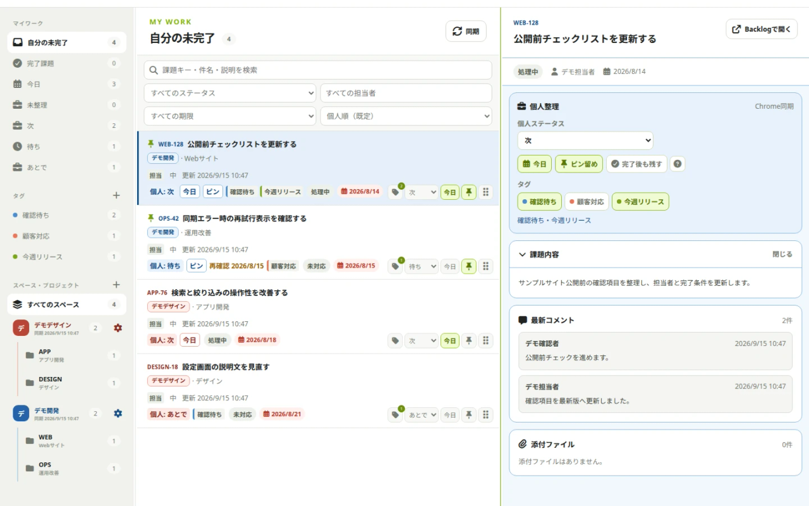

複数スペースを横断表示
担当課題・ウォッチ・通知・自分が作成した課題を、スペースを越えて一覧化します。

ONE PERSONAL WORKSPACE
IssueDockはBacklogの課題や運用ルールを書き換えません。各スペースの情報を読み込み、 自分だけの整理情報を重ねることで、毎日の「次に何をするか」を見やすくします。
FEATURES
複数スペースをまたぐ日々の作業を、1画面の流れにまとめます。
担当課題・ウォッチ・通知・自分が作成した課題を、スペースを越えて一覧化します。
「未整理・次・待ち・あとで」と独立した「今日」、ピン、ドラッグ順で優先度を決められます。
課題キー・件名・説明を検索し、プロジェクト・ステータス・担当者・期限で絞り込めます。
Backlog側に影響しない個人タグで、別プロジェクトの関連課題をひとまとめにできます。
保存済みの課題を先に表示し、同期結果を順次反映。待ち時間を減らします。
個人整理データと暗号化した接続情報を同期。新しいPCではパスフレーズで解除できます。
HOW IT WORKS
BacklogスペースURLとAPIキーを入力し、接続を確認します。
パスフレーズでAPIキーを暗号化し、保存方法を選びます。
課題を取得したら、検索・今日・個人ステータス・タグですぐ整理できます。
LOCAL-FIRST & PRIVATE
IssueDock運営者のサーバーは使用しません。課題・APIキー・個人整理データを運営者へ送信せず、 広告や匿名アクセス解析、外部エラー監視も組み込みません。
プライバシーポリシーを読む →FAQ
送信しません。通信先は、利用者が登録して権限を許可したBacklog APIだけです。
個人ステータス・今日・ピン・タグなどはIssueDock内に保存します。Backlog側の課題を変更しません。
同じGoogleアカウントでChrome同期を利用している場合、個人整理データと暗号化した接続情報を同期できます。
いいえ。IssueDockはNulab社の公式製品ではなく、同社との提携・承認・推奨を示すものではありません。
FREE BETA
Chrome Web Storeでの公開準備が整い次第、このページでお知らせします。